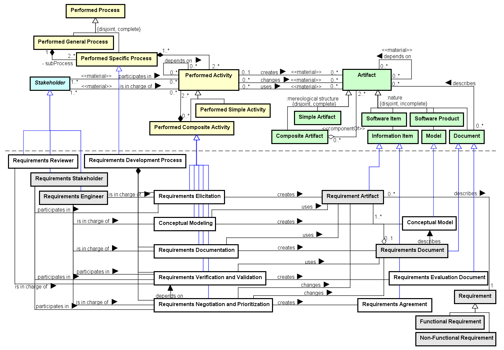

Ex.: a class diagram.
Ex.: the agreement on the requirements than can be contained in an e-mail or in a document section.
Ex.: the person in charge of the Requirements Verification and Validation activity.
The Requirements Development Process Ontology (RDPO) aims at representing the activities, artifacts and stakeholders involved in the Requirement Development Process. Since RDPO describes the first technical process in software development, it defines some of the base elements to be reused by other SEON networked ontologies.
Networked ontologies used by RDPO:
| Ontology | Relation | Integration Level |
| SPO - Software Process Ontology | All RDPO concepts extend concepts from SPO. | High |
| RSRO - Reference Software Requirements Ontology | RDPO imports concepts from RSRO for defining its artifacts and agents. | High |
Figure 1 presents the conceptual model of the RDPO.

Figure 1. RDPO conceptual model.
Requirements Development Process is a Performed Process with the purpose of conducting the establishment and development of requirements, from the elicitation to the agreement. It is composed of five Performed Activities: (1) The Requirements Elicitation activity identifies a set of Functional and Non-Functional Requirements and documents them as Documented Requirements. This activity counts on the participation of the Requirements Stakeholders and can collect information from other sources (not presented in the model). (2) Conceptual Modeling uses the Documented Requirements for developing Conceptual Models (e.g. a class diagram), providing relevant views of the problem. (3) Requirements Documentation creates the Requirements Document, which is composed of Documented Requirements and describes the Conceptual Models and possibly other related information. (4) Requirements Verification and Validation evaluates requirements and models documented in the Requirements Document, producing the Requirements Evaluation Document. (5) Finally, Requirements Agreement is obtained from the authorized Requirements Stakeholders in the Requirements Negotiation and Prioritization activity.
Considering Stakeholders, the Requirements Engineer is in charge of all activities of the Requirements Development Process, except for Requirements Verification and Validation where he/she participates in, but the responsibility is of the Requirements Reviewer. The Requirements Stakeholder participates only in Requirements Elicitation and, then, in Requirements Verification and Validation and Requirements Negotiation and Prioritization.
The Requirements Development Process can be applied for dealing with different levels of Documented Requirements. For example, it can deal with more general requirements such as higher level Customer Requirements, typically identified in software development preliminary stages, or with a more detailed level such as Product Requirements, defined in more advanced stages.
The following table shows the definitions for RDPO concepts.
| Concept | Definition |
| Conceptual Model
|
Model describing the Product Requirements under different and relevant views.
Ex.: a class diagram. |
| Conceptual Modeling
|
Composite Performed Activity executed for modeling requirements, producing Conceptual Models that provide a more comprehensive view of the problem.
|
| Requirements Agreement
|
Information Item representing the agreement achieved by the Stakeholders, regarding the Requirements for the product.
Ex.: the agreement on the requirements than can be contained in an e-mail or in a document section. |
| Requirements Development Process
|
Specific Performed Process for establishing and developing the requirements for a system or software.
|
| Requirements Documentation
|
Composite Performed Activity executed for recording Documented Requirements and related Conceptual Models in Requirements Documents, assuring proper recording and management of them during and after the project.
|
| Requirements Elicitation
|
Composite Performed Activity executed for identifying requirements from the Stakeholders and other sources, and documenting them.
|
| Requirements Evaluation Document
|
Document pointing out problems identified in Documented Requirements and Conceptual Models registered in a Requirements Document.
|
| Requirements Negotiation and Prioritization
|
Composite Performed Activity executed to solve problems in the requirements and to reach an agreement on the set of requirements to be considered in the Project and their priorities.
|
| Requirements Reviewer
|
Stakeholder responsible for conducting reviews in requirements artifacts.
Ex.: the person in charge of the Requirements Verification and Validation activity. |
| Requirements Verification and Validation
|
Composite Performed Activity executed for evaluating Documented Requirements and Conceptual Models registered in Requirements Documents, and for recording the identified problems.
|
<<subkind>>Conceptual Model |
Conceptual Modeling creates Conceptual Model
Requirements Document describes Conceptual Model
<<event>>Conceptual Modeling |
Conceptual Modeling creates Conceptual Model
Conceptual Modeling uses Requirement Artifact
Requirements Engineer is in charge of Conceptual Modeling
<<subkind>>Requirements Agreement |
Requirements Negotiation and Prioritization creates Requirements Agreement
<<event>>Requirements Development Process |
Requirements Development Process <>-- Requirements Elicitation
Requirements Development Process <>-- Requirements Documentation
Requirements Development Process <>-- Requirements Negotiation and Prioritization
Requirements Development Process <>-- Requirements Verification and Validation
<<event>>Requirements Documentation |
Requirements Documentation uses Requirement Artifact
Requirements Documentation creates Requirements Document
Requirements Engineer is in charge of Requirements Documentation
Requirements Development Process <>-- Requirements Documentation
<<event>>Requirements Elicitation |
Requirements Elicitation creates Requirement Artifact
Requirements Engineer is in charge of Requirements Elicitation
Requirements Development Process <>-- Requirements Elicitation
Requirements Stakeholder participates in Requirements Elicitation
<<subkind>>Requirements Evaluation Document |
Requirements Verification and Validation creates Requirements Evaluation Document
<<event>>Requirements Negotiation and Prioritization |
Requirements Negotiation and Prioritization depends on Requirements Verification and Validation
Requirements Negotiation and Prioritization creates Requirements Agreement
Requirements Negotiation and Prioritization changes Requirements Document
Requirements Negotiation and Prioritization changes Requirement Artifact
Requirements Engineer is in charge of Requirements Negotiation and Prioritization
Requirements Development Process <>-- Requirements Negotiation and Prioritization
Requirements Stakeholder participates in Requirements Negotiation and Prioritization
<<role>>Requirements Reviewer |
Requirements Reviewer is in charge of Requirements Verification and Validation
<<event>>Requirements Verification and Validation |
Requirements Verification and Validation creates Requirements Evaluation Document
Requirements Verification and Validation uses Requirements Document
Requirements Engineer participates in Requirements Verification and Validation
Requirements Reviewer is in charge of Requirements Verification and Validation
Requirements Negotiation and Prioritization depends on Requirements Verification and Validation
Requirements Development Process <>-- Requirements Verification and Validation
Requirements Stakeholder participates in Requirements Verification and Validation